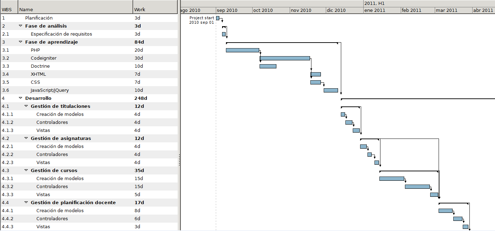
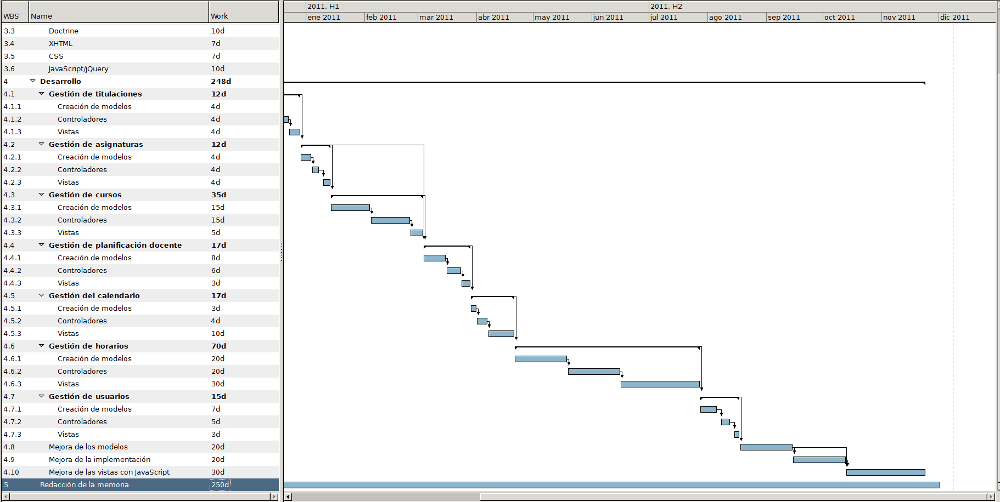
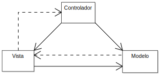

Aplicación web para la gestión
y planificación docente de los grados
Daniel Ignacio Salazar Recio
Ingeniería Técnica en Informática de Sistemas
Septiembre de 2011
Índice
- Introducción
- Antecedentes
- Objetivos
- Calendario
- Desarrollo
- Funcionamiento de la aplicación
- Herramientas
- Conclusiones y ampliaciones fututras
- Bibliografía
Introducción
Introducción
Herramienta de gestión para procesos de la Universidad
Crecimiento de tecnologías web en software de gestión
Proyecto escalable
Adaptable a otras universidades o facultades
Objetivos
- Facilitar la labor de los coordinadores
- Software intuitivo
- Automatización de procesos
- Necesidad de organización de la información
Motivaciones
- Ampliar conocimientos sobre desarrollo web.
- Saber que la aplicación va a tener un uso real.
- Posibilidades futuras de la aplicación.
Descripción
Gestiongrados
Software de gestión para ayudar a la planificación docente de las titulaciones de la ESI.
Aplicación orientada a diferentes perfiles.
Perfil administrador
- Encargado de gestión de usuarios.
- Backups
Perfil planificador
- Perfil central
- Gestión de entidades básicas de la aplicación (Titulaciones, asignaturas, etc).
- Gestión de planificación docente.
- Gestión de calendario.
- Gestión de horarios.
- Gestión de informes.
Perfil profesor
- Visualización de planificación docente global (Nivel titulación).
Perfil alumno
- Visualización de horarios personalizados
Gestión de la planificación
Aplicación basada en formularios y tablas.
Necesidad de algo más intuitivo para la gestión de calendario y horarios.
Gesto intuitivo: Arrastrar una asignatura a su lugar en un horario
Planificación
Duración del proyecto
De septiembre de 2010 a enero de 2012.
Fases
- Fase de aprendizaje: familiarización con PHP y aprendizaje del framework y de otras herramientas.
- Fase de análisis: identificación de los objetivos y requisitos del sistema.
- Fase de diseño: construcción del sistema en base al análisis realizado.
- Fase de implementación: desarrollo del sistema obtenido en la fase de diseño.
- Fase de pruebas: pruebas realizadas al sistema para comprobar su correcto funcionamiento.
Diagrama de Gantt (Parte 1)

Diagrama de Gantt (Parte 2)

Implementación
Arquitectura del sistema
Patrón Modelo Vista Controlador (MVC).
Separación de datos, interfaz y lógica de negocio.
Facilidad para mantener, y escalar la aplicación.

Modelo
Representación de la información.
Interactúa con la base de datos.
No sabe nada del resto de capas.
Vista
Presentación de los datos al usuario.
Utiliza el modelo para componer la interfaz.
Controlador
Intermediario entre modelo y vista.
Responde a eventos.
Recoge la entrada del usuario y la procesa.
Invoca peticiones al modelo y pasa los datos a la vista para renderizarla.
Implementación MVC
Demasiado trabajoso implementar desde cero.
¿Por qué implementar algo que ya existe y está más que probado?
Solución: uso de un framework ya existente.
Framework
Conjunto de herramientas y guías que facilitan el desarrollo de software
Bibliografía
Demostración
Gracias por su atención
¿Preguntas?
oflute.googlecode.com